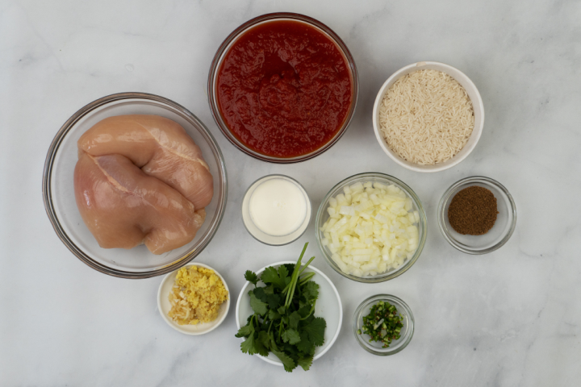

Authentic Tikka Masala

Description
This recipe is all about spices, this version will be with chicken, but in reality you can do it with lamb or even shrimp if you like.
Serve this with rice and naan for a flavor-packed filling and heart-warming meal.
Ingredients
Marinade
- 600 g chicken thigh fillets (or lamb or shrimps), cut into cubes
- 2 tbsp lemon juice
- 6 garlic cloves
- 3 cm piece fresh ginger
- 1 ½ tsp cumin seeds
- ½ tsp ground coriander, coriander powder
- ½ tsp garam masala
- 1 tsp paprika
- 1 tsp red chili powder
- 2 tbsp yogurt
- 2 tbsp oil
- Salt to taste
Tikka Masala
- 2 tbsp oil
- 1 large onion, chopped
- 1 tsp minced ginger, ginger paste
- ½ tsp ground turmeric, turmeric powder
- 2 tsp ground coriander, coriander powder
- 1 tsp paprika
- 1 tsp red chili powder
- 1 tbsp tomato puree, tomato paste
- ¼ cup canned tomatoes or 2 medium tomatoes, chopped
- 1 tsp lemon juice
- ¾ cup fresh cream
- ¼ tsp garam masala
- A handful coriander, cilantro leaves, chopped
- Salt to taste
- Water
- Naan or rice, to serve

Steps
- Place chicken pieces in a large bowl. Rub with lemon juice and enough salt. Marinate for 10 minutes in the refrigerator.
- Meanwhile, place garlic, ginger, cumin, coriander, garam masala, chili powder, and yogurt in a blender. Process until smooth. Add this paste to the bowl of chicken. Add in oil and mix well. Marinate for at least 30 minutes or overnight if possible.
- When you are ready, preheat grill. Thread the chicken pieces onto skewers. Grill, turning occasionally, for 15 – 20 minutes or until cooked through. Remove chicken from skewers. Set aside.
- Meanwhile heat oil in a large pan over medium heat. Add onions. Saute for 2-3 minutes or until lightly browned. Add ginger. Saute until aromatic. Add ground turmeric, ground coriander, paprika and red chili powder. Saute for a minute. Add tomato paste and fry for a few seconds. Now add in the tomatoes. Saute until they are soft and mushy. Bring to a boil, reduce heat and simmer for 2-3 minutes.
- Add lemon juice and cream. Add in enough water to make a thick sauce. Season with salt. Simmer, stirring occasionally, for 3-4 minutes. Add more water if needed.
- Add garam masala and coriander (cilantro) leaves. Heat through. Stir in the grilled chicken. Garnish with more coriander leaves if you like.
How to Serve
Serve with naan, roti or rice.